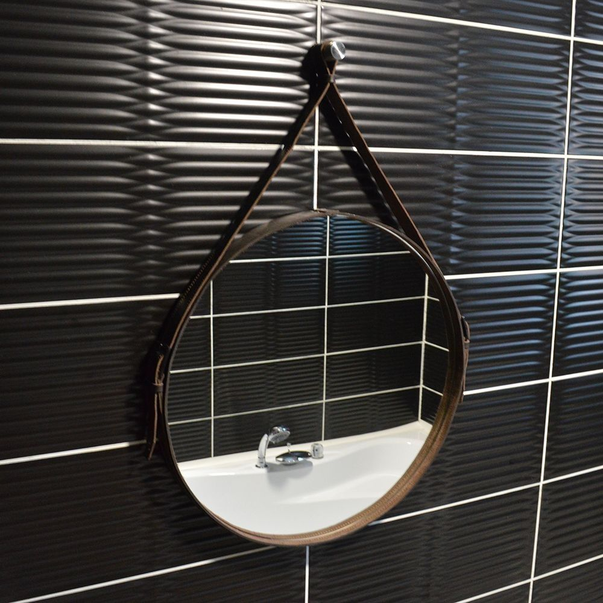

Зеркало Silver Mirrors Капитан 61 см коричневая кожа

6 999 руб
1
В наличии в выбранном городе
Самовывоз
завтра с 10:00
Доставка
30 января
Описание
Круглое зеркало на кожаном ремне - яркий и модный акцент в вашем интерьере.
Характеристики
Основной цвет: Серебристый
Бренд: Silver Mirrors
Наименование товара: Зеркало Silver Mirrors Капитан 61 см, коричневая кожа
Отзывы
Тут пока ничего нет)))
Обзоры
Тут пока ничего нет)))